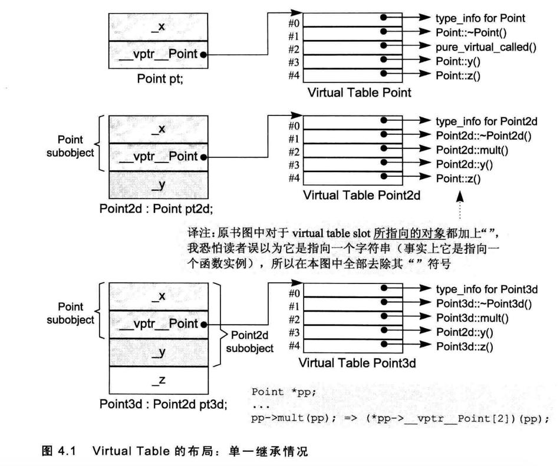
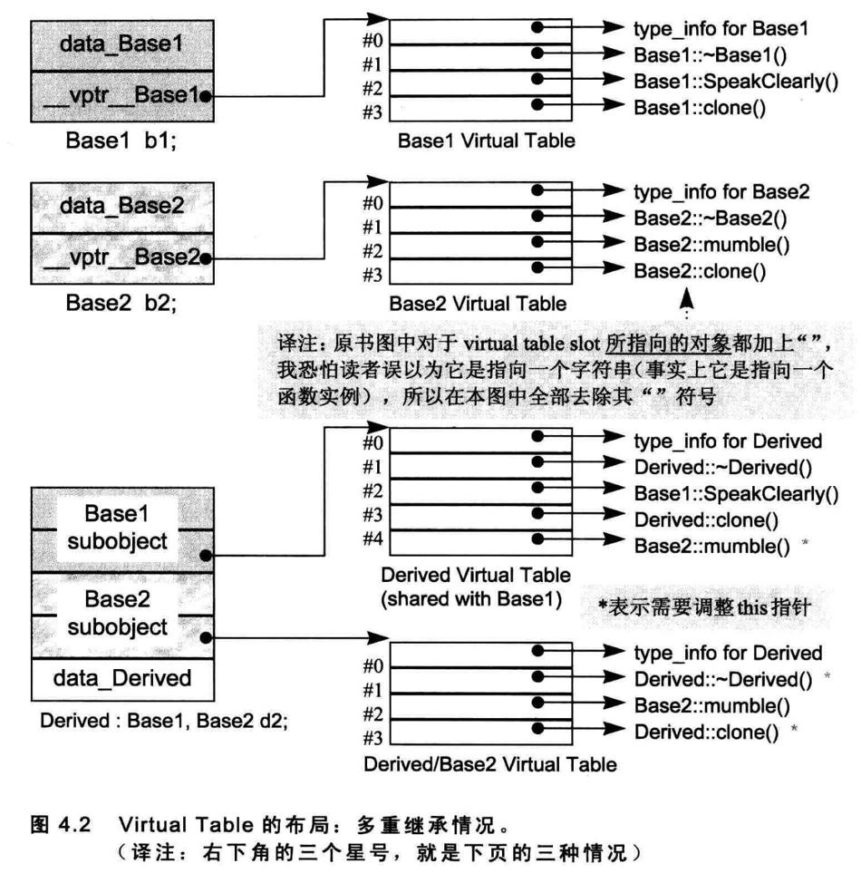
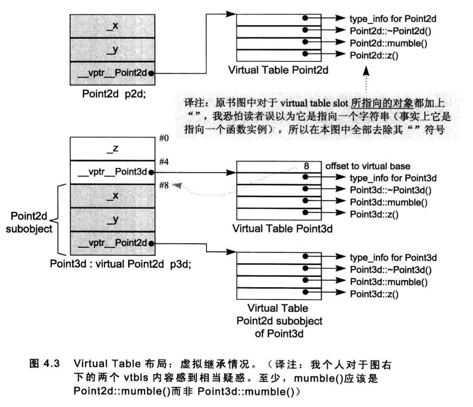

1. 成员的各种调用方式
1.1. 非静态成员函数
nonstatic member function 和一般的nonmember function有相同的效率。
float magnitude3d(const Point3d* this) {...}//nonmember function
float Point3d::magnitude3d() const {...}//nonstatic member function
nonstatic member function在内部会转为nonmember function：
- 改写函数原型，增加一个额外参数用来传递this指针。
- 对非静态成员变量的存取改为通过this来完成。
- 将成员函数名称进行混淆（mangling）。
额外参数类型为：Point *const this。
如果函数是const的，那么额外参数为：const Point *const this。
名称混淆
一般处理方法是方法名称+类+参数类型。不同编译器混淆的方式不同。
编译器可以混淆名称，也可以反混淆名称（demangling）。
如果声明extern "C" 会压抑mangling的效果。
1.2. 虚拟成员函数
如果normalize()是一个virtual member function，那么
ptr->normalize();
将会被内部转化为：
(*ptr->vptr[1])(ptr);
其中：
- vptr表示由编译器产生的指针，指向virtual table。它被安插在每一个声明有(或继承自)一个或多个virtual functions的class object中。（其名称也会被混淆，因为在一个复杂的class派生体系中，可能存在多个vptrs）。
- 1是virtual table slot的索引值，关联到normalize()函数。
- 第二个ptr表示this指针。
虚函数调用的优化
如果用类作用域运算符（:）调用虚函数：
a.A::fun();
那么虚函数的决议方式会和非静态函数一样。
另外一点，对象没有多态，所以通过对象调用虚函数可以优化，决议成和非静态函数一样。
这项优化工程的另一利益是，虚函数的一个inline函数实例可以被扩展开来，因而提供极大的效率利益。
TODO 虚函数的inline
1.3. 静态成员函数
对静态函数调用，则会转为对非成员函数的调用。
因为不需要传递this指针，所以静态成员函数具有这些特性：
- 不能够直接存取其class中的nonstatic members。
- 不能够被声明为const、volatile或virtual。
- 不需要经由class object才被调用。
如果取一个static member function的地址，获得的将是其在内存中的位置，也就是其地址。由于static member function没有this指针，所以其地址的类型并不是一个“指向class member function的指针”，而是一个“nonmember函数指针”。
namespace function {
class Function{
public:
static int fun(double);
float fun2(char);
};
};
void function::test1() {
int (*psf)(double);
psf = &function::Function::fun;
float (function::Function::*pf)(char);
pf = &function::Function::fun2;
}
2. 虚函数
C++是通过虚函数指针来实现虚函数的，虚函数指针指向一个表格，表格中的virtual functions地址在编译时期获知。此外，这一组地址是固定不变的，执行期不可能新增或替换之。由于程序执行时，表格的大小和内容都不会改变，所以其建构和存取皆可以由编译器完全掌控，不需要执行期的任何介入。
执行期如何找到虚函数地址：
- 为了找到表格，每一个class object被安插了一个由编译器内部产生的指针，指向该表格。
- 为了找到函数地址，每一个virtual function被指派一个表格索引值。
单一继承下的布局：

在单一继承下，会有这3种情况：
- 它可以继承base class所声明的virtual functions的函数实例。正确地说是，该函数实例的地址会被拷贝到derived class的virtual table的相对应slot之中。
- 它可以使用自己的函数实例。这表示它自己的函数实例地址必须放在对应的slot之中。
- 它可以加入一个新的virtual function。 这时候virtual table的尺寸会增大一个slot，而新的函数实例地址会被放进该slot之中。
2.1. 多重继承下的虚函数
在多重继承中支持virtual functions，其复杂度围绕在第二个及后继的baseclasses身上，以及“必须在执行期调整this指针”这一点。
class Base1 {
public:
Base1();
virtual ~Base1();
virtual void speakClearly();
virtual Base1 *clone() const;
protected :
float data_Base1;
};
class Base2 {
public:
Base2();
virtual ~Base2();
void mumble();
virtual Base2 *clone() const;
protected:
float data_Base2;
};
class Derived : public Base1, public Base2 {
public:
Derived();
virtual ~Derived();
virtual Derived *clone() const;
protected:
float data_Derived;
};
上面这个demo有三个问题需要解决，分别是：
- virtual destructor（表示重写的虚函数）
- 被继承下来的Base2:mumble()（未重写的虚函数）
- 一组clone()函数实例（返回值变化的虚函数）
2.1.1. 问题1
通过Base1和Derived的指针或引用调用虚函数难度不大，因为指针地址都在开头，主要难度在于经由指向第二或后继基类的指针或引用来调用虚函数。
Base2 *p = new Derived;
delete p;
一种做法是这样的：
将virtual table加大，使它容纳此处所需的this指针，调整相关事物。每一个virtual table slot，不再只是一个指针，而是一个集合体，内含可能的offset以及地址。于是virtual function的调用操作由：
(*pbase2->vptr[1]) ( pbase2 ) ;
改变为:
( *pbase2->vptr[1].faddr )
( pbase2 + pbase2->vptr[1].offset ) ;
其中fddr内含virtual function地址，offset内含this指针调整值。
这个做法的缺点是，所有的virtual function调用操作都需要执行偏移，不管它们是否真的需要。而且要求额外空间。
书中介绍说是利用所谓的thunk技术，看得一脸懵逼。
另一种做法是这样的。（通过多个虚函数指针）
在多重继承之下，一个 derived class内含n-1个额外的virtual tables，n表示其上一层 base classes 的个数(因此，单一继承将不会有额外的virtual tables)。
针对Derived/Base1的指针或者引用，用的是第一个虚函数指针。针对Base2的指针或者引用，用的是第二个虚函数指针。如图：

2.1.2. 问题2
上图的布局也解决了这个问题。
书中又提到了调整指针的位置，不是很理解。
2.1.3. 问题3
上图的布局也解决了这个问题。
书中又提到了调整指针的位置，不是很理解。
问题123通过上图的布局其实可以一次性解决，不是很明白书中还要讨论指针偏移。有可能是这样的，虚函数会被转化，开头参数为Derived指针this，而此时this的类型为Base2，所以需要一个指针偏移。
2.2. 虚拟继承下的虚函数

图示和成员变量中的虚继承布局是通过在虚函数表里添加一个offset来实现的。（有2种方法，一种是这种，另一种就是额外添加一个指向虚基对象的指针）。
C++语法不允许虚基类指针转为派生类指针。
3. 指向 Member Function 的指针
class Function {
public:
static int fun(double);
float fun2(char);
};
void function::test1() {
int (*psf)(double);
psf = &function::Function::fun;
float (function::Function::*pf)(char);
pf = &function::Function::fun2;
}
static没有this指针，所以static函数的函数指针类型是函数指针，而成员函数含有this指针，所以函数指针类型是指向成员函数的指针。
3.1. 指向虚函数的指针
/**
* 测试虚函数指针的调用
*/
class A {
public:
int a;
virtual void fun();
};
class B : public A{
public:
int b;
virtual void fun();
};
void function::test2() {
void (A::*pf)() = &A::fun;
printf("ptr = %p\n",pf);
printf("ptr = %p\n",&A::fun);
B *b = new B;
(b->*pf)();
delete b;
}
void function::A::fun() {
a++;
my_log("A::fun");
if (a == 2) {
return;
}
fun();
}
void function::B::fun() {
b++;
my_log("B::fun");
if (b == 2) {
return;
}
fun();
}
ptr = 0x1
ptr = 0x1
B::fun
B::fun
用派生类对象调用基类的虚函数指针，调用的还是派生类的虚函数，并且如果此虚函数内部调用了虚函数，这个内部被调用的虚函数也是派生类的。
对一个nonstatic member function取其地址，将获得该函数在内存中的地址。然而面对一个virtual function，其地址在编译时期是未知的，所能知道的仅是virtual function在其相关之virtual table中的索引值。 即对一个virtual member function取其地址，所能获得的只是一个索引值。
个人理解，那么运行期的调用就是这样的：
(b -> vptr[ptr] )(b);运行期虚函数的地址已经确定了，所以通过索引值能够找到实际的虚函数指针，后面括号里的b是表示this指针。
上面代码，如果不是虚函数，是普通的函数，那么结果是A的函数调用。
3.2. 多重继承下的成员函数指针
上文和此文讨论的都是成员函数指针的形式，如果是非虚函数就是地址，如果是虚函数就是索引值。这里讨论多重继承下的函数指针形式。
struct _mptr {
int delta;//this指针的offset值
int index;//非虚函数时为-1，否则为索引值
union {
ptrtofunc faddr;//函数地址
int v_offset;//v_ofset字段放的是一个virtual（或多重继承中的第二或后继的）base class的vptr位置。
};
};
函数指针为此模型。在此模型之下，像这样的调用操作：
( ptr->*pmf ) ();
会变成：
( pmf.index < 0 )
? // non-virtual invocation
( *pmf.faddr ) ( ptr )
: // virtual invocation
( *ptr->vptr[ pmf.index] (ptr) ) ;
此模型会导致每个调用操作都付出成本，所以许多编译器在自身内部根据不同的classes特性提供多种指向member functions的指针形式
4. 内联函数
inline int min1(int x, int y) {
return x < y ? x : y;
}
extern "C" int min2(int x, int y);
int main() {
int i = 1;
int j = 3;
int x = min1(i, j);
x = min2(i, j);
return 0;
}
int min2(int x, int y) {
return x < y ? x : y;
}
汇编代码：
0000000100003ef0 _main:
100003ef0: 55 pushq %rbp
100003ef1: 48 89 e5 movq %rsp, %rbp
100003ef4: 48 83 ec 10 subq $16, %rsp
100003ef8: c7 45 fc 00 00 00 00 movl $0, -4(%rbp)
100003eff: c7 45 f8 01 00 00 00 movl $1, -8(%rbp)
100003f06: c7 45 f4 03 00 00 00 movl $3, -12(%rbp)
100003f0d: 8b 7d f8 movl -8(%rbp), %edi
100003f10: 8b 75 f4 movl -12(%rbp), %esi
100003f13: e8 84 00 00 00 callq 132 <dyld_stub_binder+0x100003f9c>
100003f18: 89 45 f0 movl %eax, -16(%rbp)
100003f1b: 8b 7d f8 movl -8(%rbp), %edi
100003f1e: 8b 75 f4 movl -12(%rbp), %esi
100003f21: e8 4a 00 00 00 callq 74 <_min2>
100003f26: 31 c9 xorl %ecx, %ecx
100003f28: 89 45 f0 movl %eax, -16(%rbp)
100003f2b: 89 c8 movl %ecx, %eax
100003f2d: 48 83 c4 10 addq $16, %rsp
100003f31: 5d popq %rbp
100003f32: c3 retq
100003f33: 66 2e 0f 1f 84 00 00 00 00 00 nopw %cs:(%rax,%rax)
100003f3d: 0f 1f 00 nopl (%rax)
0000000100003f40 __Z4min1ii:
100003f40: 55 pushq %rbp
100003f41: 48 89 e5 movq %rsp, %rbp
100003f44: 89 7d fc movl %edi, -4(%rbp)
100003f47: 89 75 f8 movl %esi, -8(%rbp)
100003f4a: 8b 45 fc movl -4(%rbp), %eax
100003f4d: 3b 45 f8 cmpl -8(%rbp), %eax
100003f50: 0f 8d 0b 00 00 00 jge 11 <__Z4min1ii+0x21>
100003f56: 8b 45 fc movl -4(%rbp), %eax
100003f59: 89 45 f4 movl %eax, -12(%rbp)
100003f5c: e9 06 00 00 00 jmp 6 <__Z4min1ii+0x27>
100003f61: 8b 45 f8 movl -8(%rbp), %eax
100003f64: 89 45 f4 movl %eax, -12(%rbp)
100003f67: 8b 45 f4 movl -12(%rbp), %eax
100003f6a: 5d popq %rbp
100003f6b: c3 retq
100003f6c: 0f 1f 40 00 nopl (%rax)
0000000100003f70 _min2:
100003f70: 55 pushq %rbp
100003f71: 48 89 e5 movq %rsp, %rbp
100003f74: 89 7d fc movl %edi, -4(%rbp)
100003f77: 89 75 f8 movl %esi, -8(%rbp)
100003f7a: 8b 45 fc movl -4(%rbp), %eax
100003f7d: 3b 45 f8 cmpl -8(%rbp), %eax
100003f80: 0f 8d 0b 00 00 00 jge 11 <_min2+0x21>
100003f86: 8b 45 fc movl -4(%rbp), %eax
100003f89: 89 45 f4 movl %eax, -12(%rbp)
100003f8c: e9 06 00 00 00 jmp 6 <_min2+0x27>
100003f91: 8b 45 f8 movl -8(%rbp), %eax
100003f94: 89 45 f4 movl %eax, -12(%rbp)
100003f97: 8b 45 f4 movl -12(%rbp), %eax
100003f9a: 5d popq %rbp
100003f9b: c3 retq
处理inline函数有2部：
- 分析函数定义。如果函数因其复杂度被判断不可成为inline，它会被转为一个static函数，并在“被编译模块”内产生对应的函数定义。
- 调用inline函数时会做扩展操作。